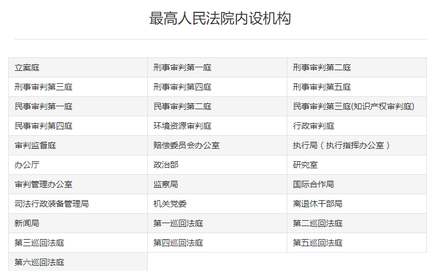

作为中华人民共和国最高审判机关，最高人民法院以维护宪法法律尊严为己任，秉持司法为民之理念，致力于构筑法治社会基础，构建公正高效权威的司法制度。自成立以来，最高人民法院以司法裁判发正义之声，以司法解释行法治之策，把握时代脉动，体察社会需要，满足人民期望，弘扬法治精神，是宪法法律的忠诚守护者。
最高人民法院成立于1949年10月22日，办公大楼现位于北京市东城区东交民巷27号。
2013年，周强同志当选为最高人民法院院长。
最高人民法院的机构组成如下图所示。
